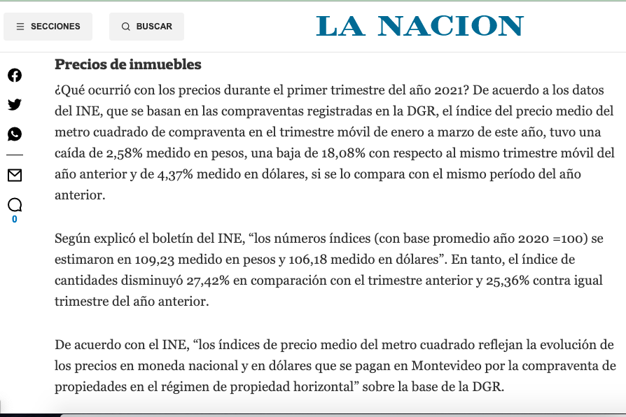
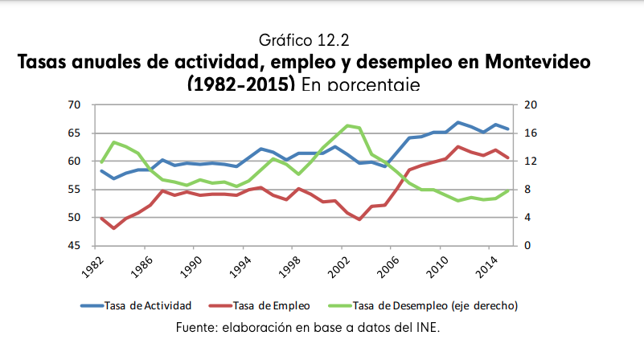

Ejercicios
- Suponga una empresa que produce tomates con la siguiente función de producción.
| L | Producto Marginal |
|---|---|
| 1 | 8 |
| 2 | 10 |
| 3 | 7 |
| 4 | 5 |
| 5 | 4 |
-
-
Calcular el valor del producto marginal si el precio de venta de los tomates $2. Si el salario es $10 y ¿cuántos trabajadores contratan?
-
Calcular el valor del producto marginal si el precio de venta de los tomates baja a $1. ¿cuántos trabajadores se contratan ahora?
-
Graficar la curva de demanda de trabajo antes y después de la caída del precio de los tomates.
-
- Considere el mercado de hamburgueseros, que funciona en competencia perfecta con las siguientes curvas de oferta y demanda:

- ¿Cuántos trabajadores ofrecen trabajo a $90 por hora?
- Describa el resultado del mercado con este precio.
- ¿Cuál es el salario de equilibrio?
- Suponga que hay un aumento en el precio de venta de las hamburguesas que hace que para el mismo salario, las empresas demanden 45 hamburgueseros más que antes. Encuentre el nuevo equilibrio del mercado.
- Analizar la siguiente nota sobre el mercado inmobiliario.

- Grafique el equilibrio en el mercado de vivienda, explicando si la caída en los precios y las cantidades es compatible con cambios en la oferta o la demanda.
- Explique cómo influye una disminución de los precios de las casas en el mercado del trabajo de la construcción.
- Trace una gráfica para ilustrar el efecto de una disminución de los precios de las casas en el mercado del trabajo de la construcción.
- Analizar este gráfico: (tomado de Para entender la Economía del Uruguay):

- Observe la tendencia del desempleo desde 2002.¿A qué se debe?
- Explique cómo es posible que a partir de 1994 tanto la tasa de empleo como la de desempleo aumenten.
- Analizar este artículo de Benjamín Nahúm y contestar las siguientes preguntas:
- ¿Qué tipo de desempleo generó el alambramiento del campo en Uruguay en la década de 1870?
- ¿Cuáles eran las principales tareas que ya no necesitan de mano de obra luego de la implantación de esta tecnología?
- ¿Cuántos desempleados generó aproximadamente la introducción de esta tecnología hacia 1880?
Bibliografía
- Parkin, M. y Loría. E. (2010). Microeconomía. Editorial: Pearson. Capítulo 18.